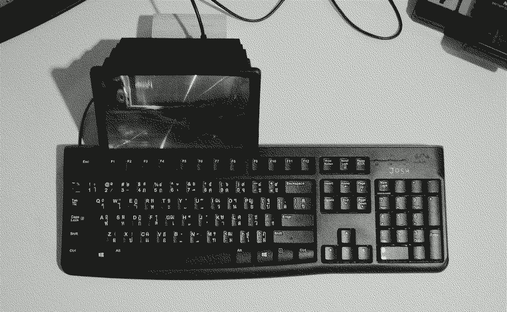
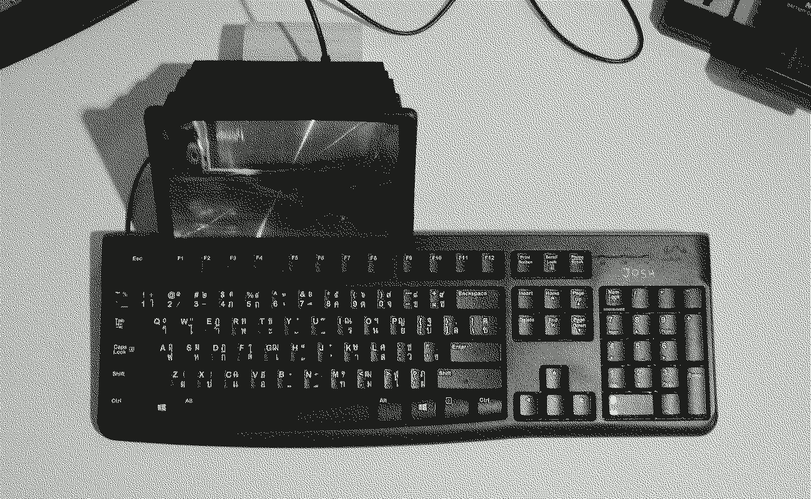

Y0218–D0219 · 5.55 h · 3.76 DV · 0.93 PY · 0.86 VI
Natalie is a RPi with a 3.5" touchscreen. I currently use it as a portable computer as it is more convenient to carry than a laptop.
Natalie is a RPi with a 3.5" touchscreen. I currently use it as a portable computer as it is more convenient to carry than a laptop.
